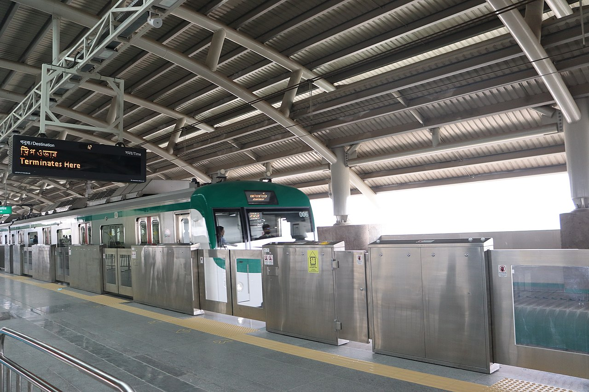

The Dhaka Metro Rail (Bengali: ঢাকা মেট্রোরেল), or simply the Dhaka Metro, is a mass rapid transit system serving Dhaka, the capital and largest city of Bangladesh. It is owned and operated by the Dhaka Mass Transit Company Limited (DMTCL).[1] Together with the under construction Dhaka BRT, proposed Dhaka Subway and Dhaka suburban circular rail, it is expected to reduce traffic congestion in the city. The metro rail network has five planned lines which are the MRT Line 6, the only operational line, MRT Line 1 and 5, which are under construction, and MRT Line 2 and MRT Line 4, which are in the planning stages. It is part of the Strategic Transport Plan outlined by the Dhaka Transport Coordination Authority (DTCA).[7][8] Multiple-use MRT Pass contactless smart card of Dhaka Metro Rail which is also Rapid Pass compatible. The first section of MRT Line 6 commenced commercial operations on 29 December 2022, and the second section on 5 November 2023. The other lines are either in planning or under construction.[9][10] The third phase, which will have an interchange with Line 1, Line 2 and Line 4, is set to be completed by 2026.[11][12][13] Further expansion of MRT Line 6 is expected towards Savar Upazila and Tongi.
